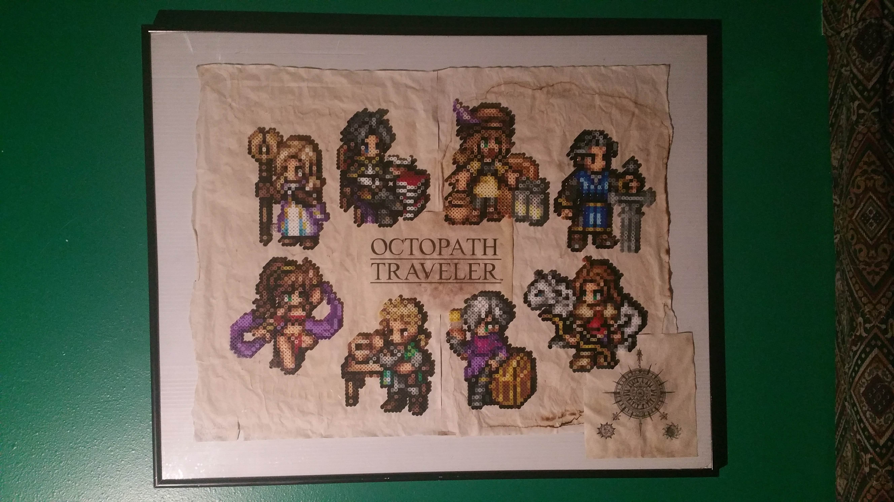

Unique Facts
|
|
|---|---|
Other Interests
|

|
DevicesPhones
Laptop: Dell Latitude E7450
Smartwatch: Gear S3 Frontier
Desktop: Dell Optiplex 7020 SFF
Ereader: Nook Simple Touch
Audio
|
|
Perler Bead Projects
I started beading around 2013 (?) after me and my brother got an interesting "melty beads" kit at Walmart one day. Took a long break until the 2020 Covid quarantine, when I realized that I could bring my favorite characters to life from my favorite game at the time, Octopath Traveler. I made some coffee paper and framed them up, and they proudly hang on my wall today. I continue to make more mini Perler projects occasionally, while lately I've been working on some software in Java and Google Sheets Apps Script to help me organize my bead projects.
BeadInventory project
During my first hours of beading video game sprites, I found it was a horribly troublesome task of keeping track of the colors that I used throughout a sprite, and their respective places. During Spring break of 2021 I looked around but was unstatisfied with other "picture to bead sprite" converters and managers online. So, I wanted to use my new Java skills I learned from class, and expand on the idea from my "Bead" java class I'd written 3 months prior. I was using Google Sheets to keep track of my bead colors, so I decided to write a Java program that would work with Google Sheets Apps Script (basically just Javascript) that did all the tedious work for me.
BeadInventory's conversion functionality.
with Apps Script.

Cool things I've made in the past
Contact Me
Instagram @kylesukiyaki
LinkedIn
kyles13@uw.edu